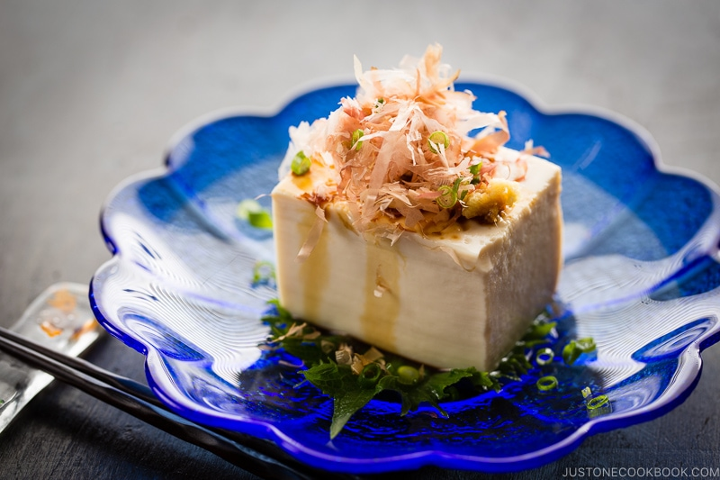

hiyayakko

Chilled tofu topped with grated ginger and green onions.
ingredients
- 1 block of silken tofu,
- 1 green chopped onion,
- 1 tbsp freshly grated ginger,
- soy sauce to taste.
instructions
- Cut the tofu into cubes, arrange on a plate.
- Top with the chopped green onions and grated ginger.
- Drizzle soy sauce over the tofu before serving.